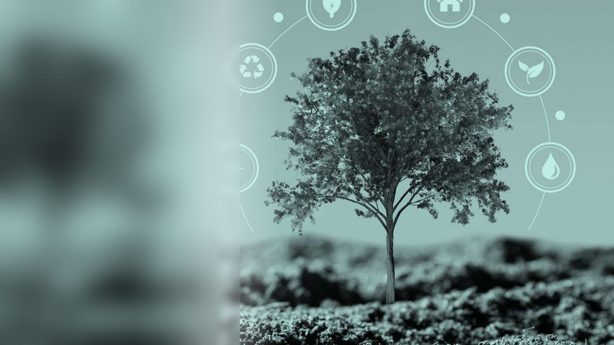
Sustainability and sustainable development
What sustainability means, why it matters for every career, and how we weigh Earth, economy and equity together.
Where this module is going
- Explain sustainability and the triple bottom line: Earth, economy and equity.
- Use systems thinking to see how people, nature and technology connect.
- Describe how externalities and social and economic forces shape the environment.
- Compare ethical views on why nature matters.
- InQuizitive 1 and 2
- Review Exercise practice: learn to draw SETs
- Video introduction
Reading for today: What is the Triple Bottom Line? What's Systems Thinking?
Due dates and submission links are on the course site.
Key terms for today
When you hear the word sustainability, what comes to mind first?
Today's big ideas
Sustainability is complex, but essential to our lives. Our own health and well-being are deeply connected to the health of the planet.
1 · Why it matters
Every field needs it
See how sustainability shows up in jobs, technology and everyday choices.
2 · Three pillars
Earth, economy, equity
Define sustainability and weigh the trade-offs between the three pillars.
3 · Shared goals
Wicked problems and the SDGs
Explain why sustainability problems are wicked, and how the 17 goals guide action.
Enter today's code
Your instructor shows a code on screen at the start of class. Checking in counts toward your participation grade.
What do you already know?
Where does your data go?
Every time we stream a video, store photos in the cloud or use AI, the data lives in a data center.
Its supply chain needs raw materials, electricity, water for cooling and buildings. A linear economy takes, makes, uses and throws away. A circular economy collects and recycles.
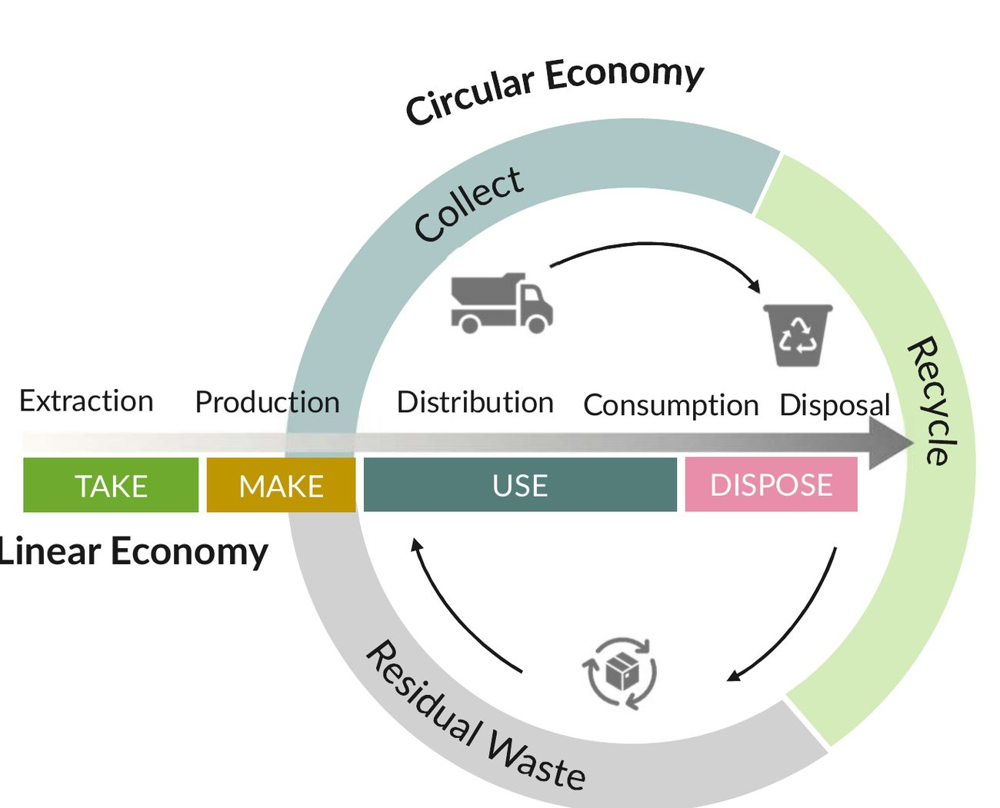
Green jobs are in demand
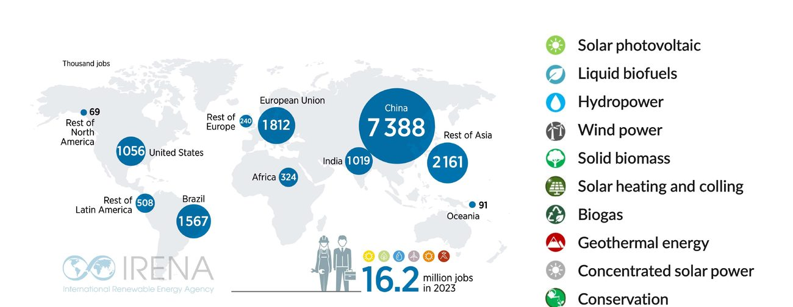
Source: IRENA, Renewable Energy and Jobs: Annual Review 2024
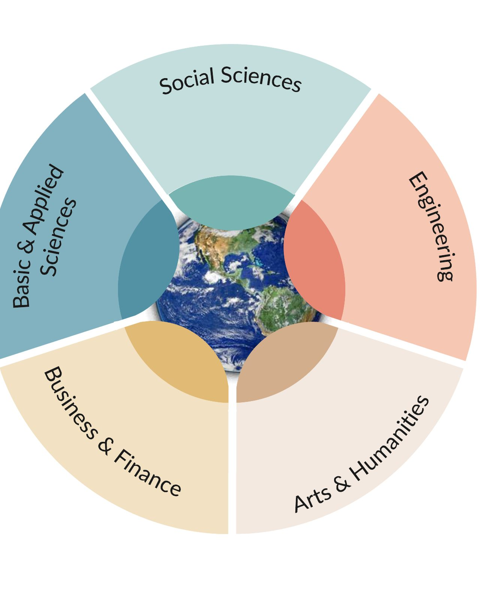
Sustainability needs every field
Sciences, engineering, business, social sciences, and the arts and humanities all work on today's challenges:
Healthy planet, healthy people
Human well-being is closely tied to healthy ecosystems. We depend on four things the planet gives us:
- Clean air to breathe
- Clean water to drink and grow food
- A healthy biosphere: plants, animals and soil
- Stable geology: solid ground to live and build on
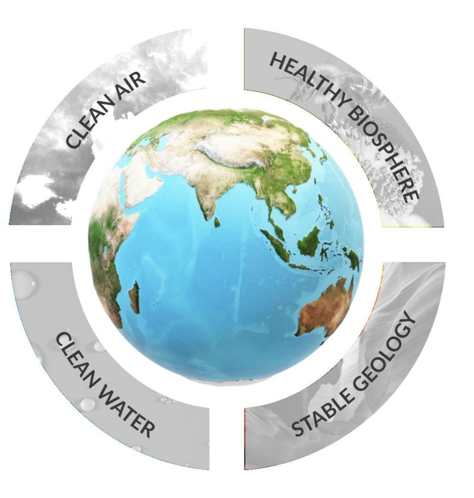
Sustainability challenges are wicked problems
A complicated issue with no clear solution, where attempts to fix it often create new trade-offs or unexpected challenges.
Biodiversity loss, resource overuse, invasive species, climate change and broken nutrient cycles all connect. Each one is also a chance for new solutions.
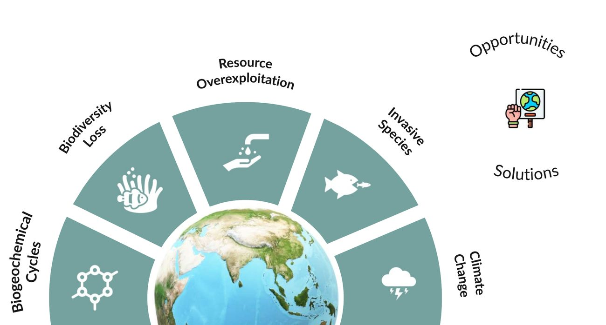
Wicked problem or tame problem?
- No single agreed definition
- No clear point where it is "solved"
- Answers are better or worse, not right or wrong
- Every fix changes the problem
- People disagree on what matters
Sustainability is more than environmental science
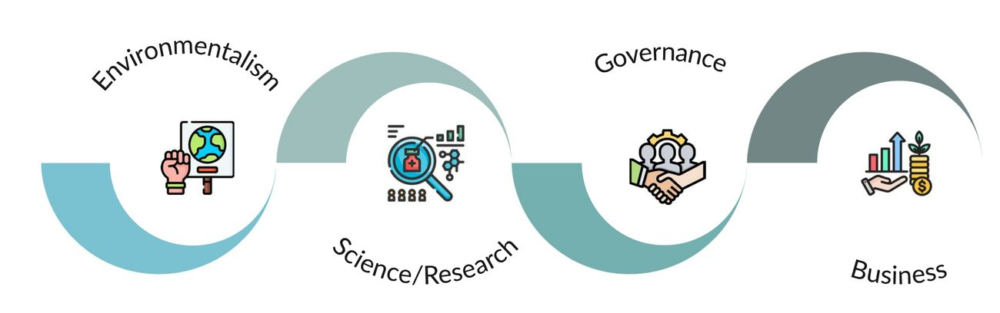
What does sustainable mean?
“Meeting the needs of the present without compromising the ability of future generations to meet their own needs.”
The UN “Brundtland Report”, Our Common Future (1987)
People alive now need food, water, energy, homes and jobs.
Nature can only give so much. Use resources no faster than they recover.
Leave future generations the same chance to meet their needs.
Does it meet the definition?
Three pillars of sustainability
“Sustainability is improving human well-being and ensuring social equity for present and future generations while safeguarding the planet's life-supporting ecosystems.” Christopher Boone
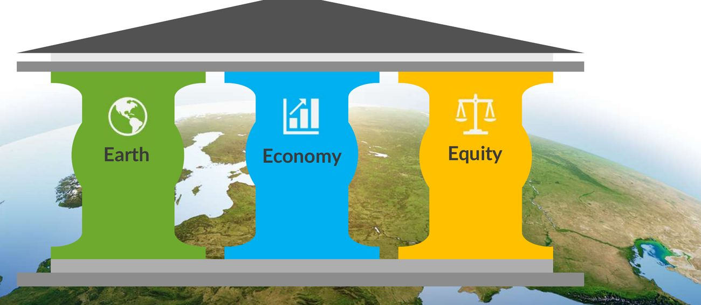
Protect the air, water, land and living things we depend on.
Create jobs and well-being that can last.
Treat people fairly, now and in the future.
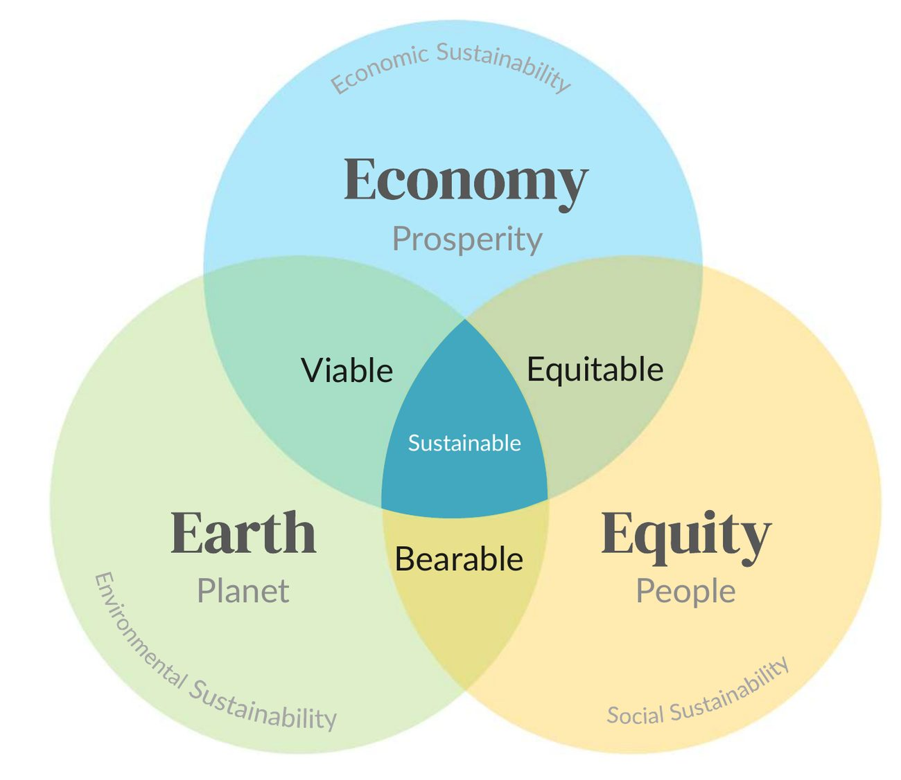
The triple bottom line
A normal "bottom line" counts only money. The triple bottom line counts Earth, economy and equity together.
- Viable: good for Earth and the economy
- Equitable: good for the economy and people
- Bearable: good for Earth and people
- Sustainable: all three at once
A more-than-human world
Many non-Western and Indigenous views see people as one part of a larger living world. Sustainability means co-existence, well-being and regeneration, not only balancing three pillars.
- Co-existence: people and other living things share the land and water
- Stability and way of life: a healthy river keeps a culture going
- Regeneration: take care so nature can renew itself
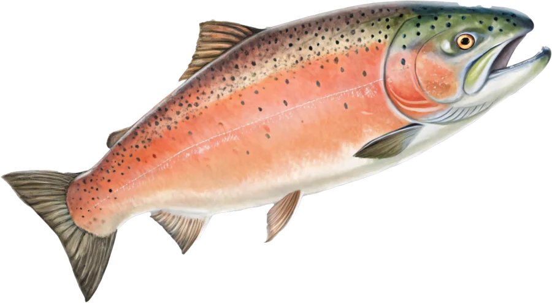
Sort into Earth, Economy, Equity
Apply the three pillars to one issue
Think on your own (questions 1 to 4), pair up to answer 5, then share question 6 and submit.
Spend $10 million on a desert town
A teaching model, not real data.
17 goals, one shared roadmap
Adopted by all 193 UN member states in 2015, with targets for 2030. With a neighbor: which goals are mainly about Earth, equity or the economy?
The SDGs matter in your career
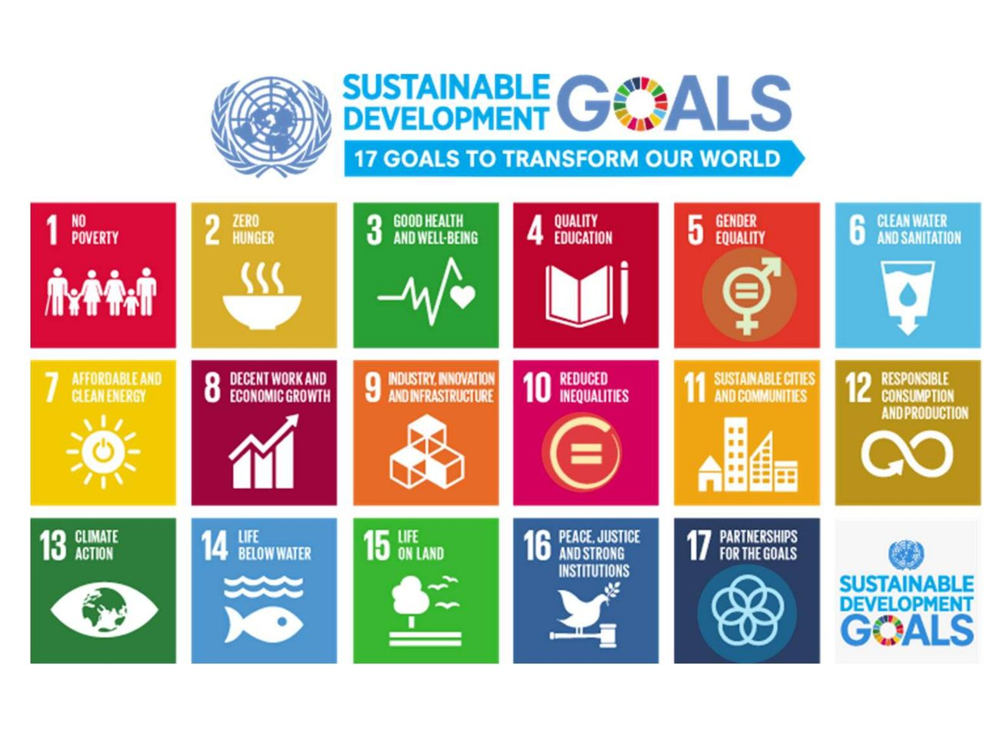
Earth
Life-supporting systems, ecosystem services, the built environment, healthEconomy
Prosperity, quality of life, well-being, energy and food securityEquity
Equality and equity, justice, peace, collaboration, partnershipSDG icons: United Nations
Two questions to keep thinking about
- Pick a topic you care about (plastic pollution, fast fashion, water scarcity, heat stress or deforestation). How do Earth, economy and equity each apply to it?
- Which of the 17 SDGs are about environmental health? How do scientists measure progress on them?
A company cuts its plastic waste, pays fair wages, and still makes a profit. Which idea does this show best?
Sustainability is complex, but essential: our health is tied to the health of the planet.
- Sustainability means meeting today's needs without taking away future generations' ability to meet theirs.
- It balances Earth, economy and equity, and every choice has trade-offs.
- Most sustainability challenges are wicked problems; the 17 SDGs give the world a shared roadmap.
Questions? Ask in class or come to office hours.